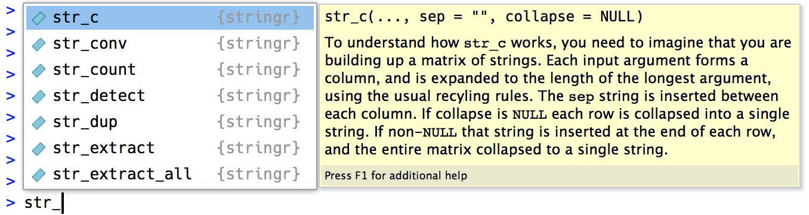

Learning Objectives
- Understand basic functions in the
stringrlibrary for working with character data.- Understand how to deal with whitespace.
- Understand how to split strings.
- Understand how to match strings.
Suggested readings
- Chapter 14 of “R for Data Science”, by Garrett Grolemund and Hadley Wickham
- Introduction to
stringrvignette- The
stringrpackage documentation
A “string” is the generic word for character type variables. Base R
has many built-in functions for working with strings, but they are often
difficult to remember and unintuitive to use. Fortunately, the wonderful
folks over at the tidyverse
developed a lovely package called "stringr", which
makes working with strings a lot nicer.
Before going any further, make sure you install the
stringr package and load it before trying to use any of the
functions in this lesson:
install.packages("stringr")
library(stringr)You can create strings with either single quotes ('') or
double quotes (""). There is no difference in behavior.
cat("This is a string")## This is a stringcat('This is a string')## This is a stringIf you have a string that contains a ' symbol, use
double quotes: Use them where it makes sense, e.g.:
cat("It's a boy!")## It's a boy!Likewise, if you have a string that contains a " symbol,
use single quotes: Use them where it makes sense, e.g.:
cat('I said, "Hi!"')## I said, "Hi!"But what if you have a string that has both single and double quotes,
like this: It's nice to say, "Hi!"
In this case, you have to “escape” the quotes by using the
\ symbol:
cat("It's nice to say, \"Hi!\"") # Double quotes escaped## It's nice to say, "Hi!"cat('It\'s nice to say, "Hi!"') # Single quote escaped## It's nice to say, "Hi!"Escaping can be used for a lot of different string literals, such as
starting a new line, adding a tab space, and even entering the
\ symbol itself:
cat('New line:', 'This\nthat')## New line: This
## thatcat('Tab space:', 'This\tthat')## Tab space: This thatcat('Backslash:', 'This\\that')## Backslash: This\thatBeware that the printed representation of a string in the R console
is not the same as string itself, because the printed representation
shows the escapes. To see the raw contents of the string, use
cat() or writeLines().
R has a small number of built-in string constants:
LETTERS, letters, month.abb, and
month.name. These are common values stored in variables
with convenient names:
LETTERS## [1] "A" "B" "C" "D" "E" "F" "G" "H" "I" "J" "K" "L" "M" "N" "O" "P" "Q" "R" "S"
## [20] "T" "U" "V" "W" "X" "Y" "Z"letters## [1] "a" "b" "c" "d" "e" "f" "g" "h" "i" "j" "k" "l" "m" "n" "o" "p" "q" "r" "s"
## [20] "t" "u" "v" "w" "x" "y" "z"month.abb## [1] "Jan" "Feb" "Mar" "Apr" "May" "Jun" "Jul" "Aug" "Sep" "Oct" "Nov" "Dec"month.name## [1] "January" "February" "March" "April" "May" "June"
## [7] "July" "August" "September" "October" "November" "December"If you assign-over one of these constants, you can always retrieve
the constant by putting the base:: prefix in front:
letters <- 7
letters## [1] 7letters <- base::letters
letters## [1] "a" "b" "c" "d" "e" "f" "g" "h" "i" "j" "k" "l" "m" "n" "o" "p" "q" "r" "s"
## [20] "t" "u" "v" "w" "x" "y" "z"In addition to the Base R constants, the stringr library
also comes with three constants: words,
sentences, and fruit. These are much longer,
so let’s use the head() function to just preview the first
6 elements in each:
head(words)## [1] "a" "able" "about" "absolute" "accept" "account"head(sentences)## [1] "The birch canoe slid on the smooth planks."
## [2] "Glue the sheet to the dark blue background."
## [3] "It's easy to tell the depth of a well."
## [4] "These days a chicken leg is a rare dish."
## [5] "Rice is often served in round bowls."
## [6] "The juice of lemons makes fine punch."head(fruit)## [1] "apple" "apricot" "avocado" "banana" "bell pepper"
## [6] "bilberry""stringr" OperationsMost stringr functions start with str_,
which makes it particularly easy to remember. The following table
contains the main stringr functions we’ll cover:
| Function | Description |
|---|---|
str_to_lower() |
converts string to lower case |
str_to_upper() |
converts string to upper case |
str_to_title() |
converts string to title case |
str_length() |
number of characters |
str_sub() |
extracts substrings |
str_locate() |
returns indices of substrings |
str_dup() |
duplicates characters |
str_trim() |
removes leading and trailing whitespace |
str_pad() |
pads a string |
str_c() |
string concatenation |
str_split() |
split a string into a vector |
str_sort() |
sort a string alphabetically |
str_order() |
get the order of a sorted string |
str_detect() |
match a string in another string |
str_replace() |
replace a string in another string |
The common str_ prefix is particularly useful in
RStudio, because typing str_ will trigger autocomplete,
allowing you to see all stringr functions:

You can convert whole strings to lower-case, upper-case, and title-case using some conveniently-named functions:
x <- "Want to hear a joke about paper? Never mind, it's tearable."str_to_lower(x)## [1] "want to hear a joke about paper? never mind, it's tearable."str_to_upper(x)## [1] "WANT TO HEAR A JOKE ABOUT PAPER? NEVER MIND, IT'S TEARABLE."str_to_title(x)## [1] "Want To Hear A Joke About Paper? Never Mind, It's Tearable."Sidenote: Notice that str_to_title()
makes every first letter in each word upper case. This is slightly
different from what you might expect, since most “titles” don’t make
articles like “a” and “the” upper case. An alternative function that
makes a more appropriate title case is the toTitleCase()
function from the tools library:
library(tools)
toTitleCase(x)## [1] "Want to Hear a Joke About Paper? Never Mind, It's Tearable."If you want to find how long a string is (i.e. how many characters it
contains), the length() function won’t work:
length("hello world")## [1] 1That’s be length() returns how many elements are in a
vector (in the above case, there’s just one element). Instead,
you should use str_length():
str_length("hello world")## [1] 11Note that the space character has a length:
str_length(" ")## [1] 1Also note that the “empty” string ("") has no
length:
str_length("")## [1] 0You can access individual character using str_sub(). It
takes three arguments: a string (or character vector), a
start position, and an end position. Either
position can either be a positive integer, which counts from the left,
or a negative integer which counts from the right. The positions are
inclusive, and if longer than the string, will be silently
truncated.
x <- "Apple"
str_sub(x, 1, 3)## [1] "App"# Negative numbers count backwards from the end
str_sub(x, -3, -1)## [1] "ple"Note that str_sub() won’t fail if the string is too
short: it will just return as much as possible:
str_sub("Apple", 1, 10)## [1] "Apple"You can also use the assignment form of str_sub() to
modify specific elements in strings:
x <- 'abcdef'
str_sub(x, 1, 3) <- 'ABC'
x## [1] "ABCdef"If you want to know the start and end indices of a particular
substring, use str_locate(). This is a helpful function to
use in combination with str_sub() so you don’t have to
count the characters to find a substring.
For example, let’s say I want to extract the substring
"Good" from the following string:
x <- 'thisIsGoodPractice'I could first use str_locate() to get the start and end
indices:
indices <- str_locate(x, 'Good')
indices## start end
## [1,] 7 10Now that I have the start and end locations, I can use them within
str_sub():
str_sub(x, indices[1], indices[2])## [1] "Good"To duplicate strings, use str_dup():
str_dup("hola", 3)## [1] "holaholahola"Note the difference with rep() (which returns a
vector):
rep("hola", 3)## [1] "hola" "hola" "hola"str_trim() removes leading and trailing whitespace:
x <- " aStringWithSpace "
x## [1] " aStringWithSpace "str_trim(x)## [1] "aStringWithSpace"By default, str_trim() removes whitespace on both sides,
but you can specify a single side:
str_trim(x, side = "left") # Only trim left side## [1] "aStringWithSpace "str_trim(x, side = "right") # Only trim right side## [1] " aStringWithSpace"str_pad() pads a string to a fixed length by adding
extra whitespace on the left, right, or both sides. Note that the
width argument is the length of the final string
(not the length of the added padding):
x <- "hello"
x## [1] "hello"str_pad(x, width = 10) # Inserts pad on left by default## [1] " hello"str_pad(x, width = 10, side = "both") # Pad both sides## [1] " hello "You can pad with other characters by using the pad
argument:
str_pad(x, 10, side="both", pad='-')## [1] "--hello---"Also, str_pad() will never make a string shorter:
str_pad(x, 4)## [1] "hello"To combine two or more strings, use str_c():
str_c('x', 'y', 'z')## [1] "xyz"Use the sep argument to control how they’re
separated:
str_c('x', 'y', 'z', sep = "-")## [1] "x-y-z"You can also concatenate a vector of strings by adding the
collapse argument to the str_c() function:
str_c(letters)## [1] "a" "b" "c" "d" "e" "f" "g" "h" "i" "j" "k" "l" "m" "n" "o" "p" "q" "r" "s"
## [20] "t" "u" "v" "w" "x" "y" "z"str_c(letters, collapse = '')## [1] "abcdefghijklmnopqrstuvwxyz"str_c(letters, collapse = '-')## [1] "a-b-c-d-e-f-g-h-i-j-k-l-m-n-o-p-q-r-s-t-u-v-w-x-y-z"Objects of length 0 are silently dropped. This is
particularly useful in conjunction with if statements:
printGreeting <- function(name, timeOfDay, isBirthday) {
greeting <- str_c(
"Good ", timeOfDay, " ", name,
if (isBirthday) {
", and HAPPY BIRTHDAY!"
} else {
'.'
}
)
cat(greeting)
}printGreeting('John', 'morning', isBirthday = FALSE)## Good morning John.printGreeting('John', 'morning', isBirthday = TRUE)## Good morning John, and HAPPY BIRTHDAY!Use str_split() to split a string up into pieces along a
particular delimiter.
string <- 'This string has spaces-and-dashes'str_split(string, " ") # Split on the spaces## [[1]]
## [1] "This" "string" "has"
## [4] "spaces-and-dashes"str_split(string, "-") # Split on the dashes## [[1]]
## [1] "This string has spaces" "and" "dashes"By default, str_split() returns a list
(another R data structure) of vectors. Each item in the list is a vector
of strings. In the above cases, we gave str_split() a
single string, so there is only one item in the returned list. In these
cases, the easiest way to access the resulting vector of split strings
is to use the double bracket [[]] operator to access the
first list item:
str_split(string, " ") # Returns a list of vectors## [[1]]
## [1] "This" "string" "has"
## [4] "spaces-and-dashes"str_split(string, " ")[[1]] # Returns the first vector in the list## [1] "This" "string" "has"
## [4] "spaces-and-dashes"If you give str_split() a vector of strings, it will
return a list of length equal to the number of elements in the
vector:
x <- c('babble', 'scrabblebabble')
str_split(x, 'bb') # Returns a list with two elements (each a vector)## [[1]]
## [1] "ba" "le"
##
## [[2]]
## [1] "scra" "leba" "le"A particularly useful string split is to split on the empty string
(""), which breaks a string up into its individual
characters:
str_split(string, "")[[1]]## [1] "T" "h" "i" "s" " " "s" "t" "r" "i" "n" "g" " " "h" "a" "s" " " "s" "p" "a"
## [20] "c" "e" "s" "-" "a" "n" "d" "-" "d" "a" "s" "h" "e" "s"word()The word() function that another way to split up a
longer string. It is designed to extract words from a sentence. You use
word() by by passing it a string together with
a start position of the first word to extract and an
end position of the last word to extract. By default, the
separator sep used between words is a single space. Here’s
some examples:
sentence <- c("Be the change you want to be")# Extract first word
word(sentence, 1)## [1] "Be"# Extract second word
word(sentence, 2)## [1] "the"# Extract last word
word(sentence, -1)## [1] "be"# Extract all but the first word
word(sentence, 2, -1)## [1] "the change you want to be"You can sort a vector of strings alphabetically using
str_sort() and str_order():
x <- c('Y', 'M', 'C', 'A')str_sort(x)## [1] "A" "C" "M" "Y"str_sort(x, decreasing = TRUE)## [1] "Y" "M" "C" "A"str_order(x)## [1] 4 3 2 1x[str_order(x)]## [1] "A" "C" "M" "Y"To determine if a character vector matches a pattern, use
str_detect(). It returns a logical vector the same length
as the input:
tenFruit <- fruit[1:10]
tenFruit## [1] "apple" "apricot" "avocado" "banana" "bell pepper"
## [6] "bilberry" "blackberry" "blackcurrant" "blood orange" "blueberry"str_detect(tenFruit, "berry")## [1] FALSE FALSE FALSE FALSE FALSE TRUE TRUE FALSE FALSE TRUERemember that when you use a logical vector in a numeric context,
FALSE becomes 0 and TRUE becomes
1. That makes sum() and mean()
useful if you want to answer questions about matches across a
vector:
# How many fruit in tenFruit contain the string "berry"?
# How many words in the stringr "words" vector contain the letter "a"?
sum(str_detect(tenFruit, "berry"))## [1] 3# What proportion contain the string "berry"?
mean(str_detect(tenFruit, "berry"))## [1] 0.3If you want to count the number of times a particular string
pattern appears, use str_count:
x <- c("apple", "banana", "pear")
str_count(x, "a")## [1] 1 3 1By default, str_detect() will match any part of a
string. But it’s often useful to anchor the matching condition
so that it matches from the start or end of the string. You can use:
^ to match the start of the string.$ to match the end of the string.# Which fruit start with "a"?
str_detect(tenFruit, "^a")## [1] TRUE TRUE TRUE FALSE FALSE FALSE FALSE FALSE FALSE FALSE# Which fruit end with "y"?
str_detect(tenFruit, "e$")## [1] TRUE FALSE FALSE FALSE FALSE FALSE FALSE FALSE TRUE FALSETo remember which is which, try this mnemonic:
If you start with power (
^), you’ll end up with money ($).
To force a match to a complete string, anchor it with both
^ and $:
x <- c("apple pie", "apple", "apple cake")str_detect(x, "apple")## [1] TRUE TRUE TRUEstr_detect(x, "^apple$")## [1] FALSE TRUE FALSEIn the second example above, 1 & 3 are FALSE because
there’s a space after apple.
str_replace() and str_replace_all() allow
you to replace matches with new strings. The simplest use is to replace
a pattern with a fixed string:
x <- c("apple", "pear", "banana")str_replace(x, "a", "-")## [1] "-pple" "pe-r" "b-nana"str_replace_all(x, "a", "-")## [1] "-pple" "pe-r" "b-n-n-"stringr
functions work on vectorsIn many of the above examples, we used a single string, but most
stringr functions are designed to work on vectors of
strings. For example, consider a vector of two “fruit”:
x <- c("apples", "oranges")
x## [1] "apples" "oranges"Get the first 3 letters in each string in x:
str_sub(x, 1, 3)## [1] "app" "ora"Duplicate each string in x twice:
str_dup(x, 2)## [1] "applesapples" "orangesoranges"Convert all strings in x to upper case:
str_to_upper(x)## [1] "APPLES" "ORANGES"Replace all "a" characters with a "-"
character:
str_replace_all(x, "a", "-")## [1] "-pples" "or-nges"Often times you’ll want to break a string into it’s individual
character components. To do that, use str_split() with the
empty string "" as the delimiter:
chars <- str_split("apples", "")[[1]]
chars## [1] "a" "p" "p" "l" "e" "s"Similarly, if you have a single string that contains words separated
by spaces, splitting on " " will break it into words:
x <- "If you want to view paradise, simply look around and view it"
str_split(x, " ")[[1]]## [1] "If" "you" "want" "to" "view" "paradise,"
## [7] "simply" "look" "around" "and" "view" "it"If you want to compare whether two strings are the same, you must also consider their cases. For example:
a <- "Apples"
b <- "apples"
a == b## [1] FALSEThe above returns FALSE because the cases are different
on the "a" characters. If you want to ignore case, then a
common strategy is to first convert the strings to a common case before
comparing. For example:
str_to_lower(a) == str_to_lower(b)## [1] TRUEPage sources:
Some content on this page has been modified from other courses, including:
stringr vignette